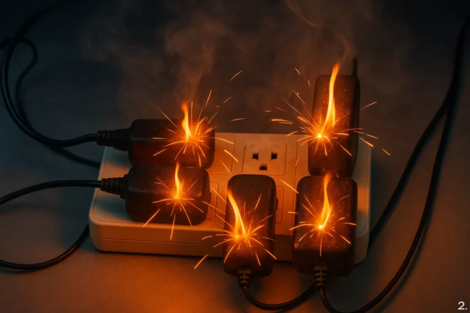
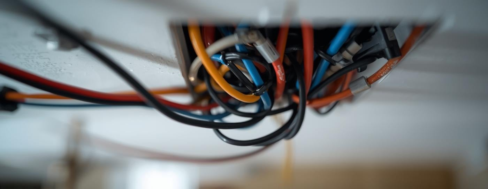
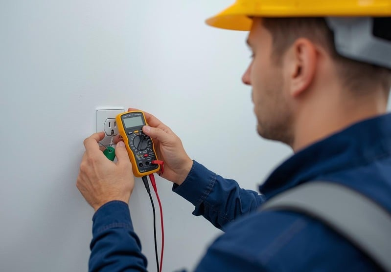
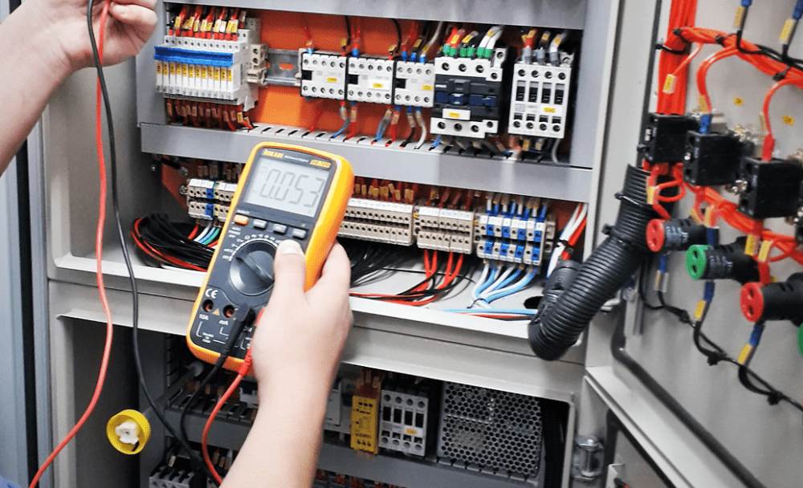
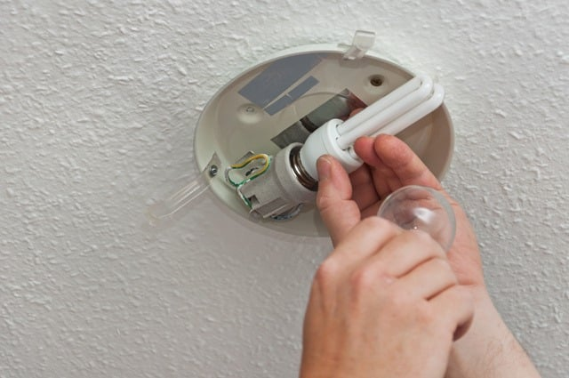

Bem-Vindos a Flash Elétrica
Serviços Elétricos de emêrgencia disponíveis 24 hora por dia, 7 dias por semana
Problemas elétricos comuns
Quedas de energia podem atrapalhar sua rotina diária. Entender as causas e os passos para solucionar o problema pode ajudar a restabelecer a energia de forma rápida e eficiente, garantindo que sua casa permaneça segura e confortável durante falhas elétricas.
Proteção contra surtos
A proteção contra surtos é essencial para evitar danos aos seus aparelhos eletrônicos causados por picos de energia. Esses surtos podem ocorrer devido a raios, quedas de energia ou fiação defeituosa, levando a reparos ou substituições dispendiosas.
Problemas de fiação
Fios expostos podem representar sérios riscos, causando choques elétricos ou incêndios. Identificar esses problemas precocemente é crucial para garantir a segurança em sua casa ou empresa. Confie em nossos especialistas para reparos rápidos.
Tomadas e interruptores defeituosos
Garanta sua segurança com nossos serviços especializados de reparo e substituição de tomadas e interruptores defeituosos, prevenindo incêndios e choques elétricos e restabelecendo o fornecimento de energia em sua casa.
Soluções para painéis elétricos
Problemas no painel elétrico podem causar interrupções frequentes ou condições inseguras. Nossa equipe especializada oferece diagnóstico e atualizações para garantir que seu sistema funcione com eficiência e segurança, protegendo sua casa.
Problemas com iluminação
Nossa equipe especializada oferece instalação e manutenção eficientes para geradores residenciais, garantindo que suas necessidades de energia sejam atendidas mesmo durante quedas de energia. Esteja preparado e proteja sua casa com soluções de energia de reserva confiáveis.
